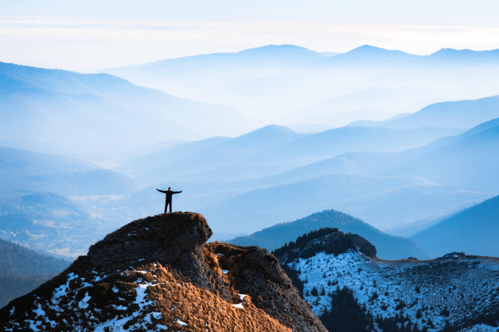

Hobbies
As a teenager, I played competitively (Minecraft, CS:GO, and Rainbow Six Siege), representing Romania at events in Eastern Europe, including DreamHack 2015 and East European Comic Con (2014–2016). I can proudly say I was there in the “golden-era” of gaming, able to witness live some of the greatest moments in competitive gaming and its ascension into mainstream media as “more than just a hobby”.
In high school, I discovered academic debating, something to which I dedicated most of my time for the next 5-6 years. As a debater, I won two national championships and many other team and individual, national and international awards. My involvement also extended to coaching, judging, and organizing competitions: I coached five national champions and worked with 700+ children and teenagers.
I then became manager of Tandem Debate Club, the biggest debate club in the Transylvania region, and co-founded the AXEM Association for Critical Thinking. As Vice President of AXEM (2020-2024), I helped organize debate competitions, worked with students, and supported educational and charitable initiatives.
These days
Nowadays, outside mathematics and programming, I enjoy spending time building my home lab or climbing mountains.
I’m also learning and practicing audio engineering for hi-fi audio products. Cinema has long been another interest, and I’ve recently started learning more about film criticism.
